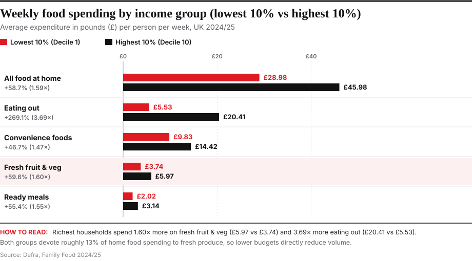

Map of the UK food crisis: the regions paying the highest price for everyday groceries
The poorest tenth of households spend £3.74 a week per person on fresh fruit and vegetables. The richest spend £5.97. Where you live widens the gap further.
Data desk· Analysis of Defra Family Food 2024/25
· 6 min read
The weekly shop has become one of the clearest measures of inequality in Britain. Headline inflation has cooled since its peak, but prices on the shelf have not come back down, and what a family puts in its basket now depends heavily on what it earns.
Figures from the Department for Environment, Food and Rural Affairs (Defra) for 2024/25, converted from pence to pounds per person per week, show the size of that gap. Households in the lowest income decile spend £28.98 on food for the home. In the highest decile the figure is £45.98, about 59 per cent more.
Two baskets, same proportions
Fresh fruit and vegetables follow the same line. The richest tenth spend £5.97 a week, the poorest £3.74. Figure 1 sets the two groups side by side across five categories.

Figure 1. Weekly spending per person, lowest-income tenth (red) and highest-income tenth (black). Both groups put about 13% of their grocery budget into fresh produce (12.9% and 13.0%).
Source: Defra, Family Food 2024/25
What stands out is the share. Poorer households give fresh produce the same slice of their budget as richer ones, 12.9 per cent against 13.0 per cent. They are not choosing differently. They simply have £17 less per person to spend each week, so every rise in the price of fruit, vegetables or fresh meat pushes the basket toward food that keeps longer and costs less per calorie.
The widest gap is outside the home. The richest tenth spend £20.41 a head each week eating out, almost four times the £5.53 spent by the poorest.
How much does your region spend?
Choose a category to recolour the map. Click a region to see its full basket next to the UK average, or click a bar in the chart to switch the map to that category.
Figure 2. Weekly spend per person by region: fresh fruit & veg
Figure 3. Selected region against the UK average
London
Rank 1 / 12 for fresh produce
Click a region on the map to update this chart.
Darker red means higher spending per person in the chosen category. The dashed line in Figure 3 marks the average across the 12 regions. Use the layer button in the corner of the map to change the base map or show regional capitals. Source: Defra, Family Food 2024/25.
From London to Wales, a north–south line
The pattern on the map is hard to miss. London (£5.77), the South West (£4.53), the South East (£4.41) and the East of England (£4.33) all sit above the regional average of £3.94 for fresh fruit and vegetables.
At the other end, households in Wales spend £3.04 and those in the North East£3.18. Londoners spend 89.8 per cent more on fresh produce than people in Wales, and 81.4 per cent more than people in the North East.
Total grocery bills tell a slightly different story. The South West (£42.76) and Northern Ireland (£41.28) have the largest food budgets overall. In Northern Ireland much of that goes on convenience food, £14.70 a week, the highest of any region. Wales (£33.52) and the North East (£33.51) have the smallest budgets in the UK.
Weekly food spending per person by region, 2024/25, ranked by fresh fruit and veg
Region
All food
Fresh F&V
Convenience
Eating out
Rank
How we did this
All figures come from Defra's Family Food survey for the 2024/25 financial year: the table by equivalised income decile and the table by Government Office Region. Defra publishes spending in pence per person per week; we converted it to pounds and rounded to two decimals.
“Fresh fruit and veg” adds Defra's fresh fruit series to its fresh green and other fresh vegetables, potatoes excluded. These are survey estimates, so small differences between regions may fall within the margin of error.